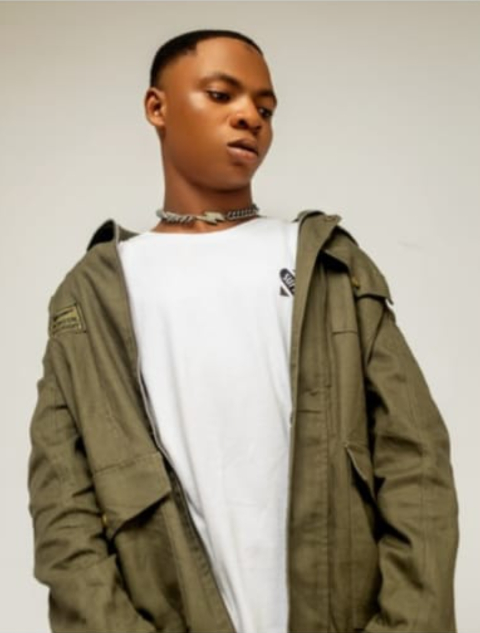

HARRYJAY |
PRESS KIT |
| ARTIST SINCE: | 2017 |
| CATEGORY: | ENTERTAINER,SINGER AND DANCER |
| GENRE: | AFRO BEAT,AFRO POP,POP,FUNK,NEW JACK,SWING, REGGAE,RNB AND FUJI |
Adebayo Razzak Kolawaole, a zealious artist with the stage name HARRYJAY is an ambassador for Lagos State Commisioner for Tourism Art and Culture.
He is a student of the prestigious Lagos State University(LASU).
He is the voice behind PAKAM TV commercial and The lawma,“KEEP LAGOS CLEAN JINGLE”.
The fusion of diffrent genres he sings listed above is what makes his music unique and distinct.He created and led a musical group known as SWAGKIDS
and they won several musical contests. He decided to go solo and self produced diffrent covers like:TENI UYO MEYO cover by HARRYJAY, CHRIS BROWN
WITH YOU cover by HARRYJAY among others.
He aims at breaking boundaries, moreso, set records with his music
